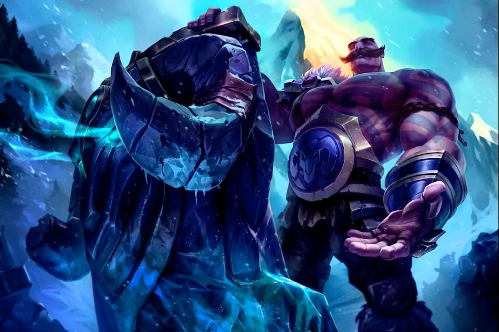

|  |
"El corazon es el musculo mas fuerte " braum Incluso cuando era pequeño, Braum era mucho más grande que otros niños del Fréljord, pero su madre le enseñó que no debía usar su fuerza para intimidar o acosar a los otros. Ella venía de una orgullosa familia de pastores y creía que la verdadera valentía se encontraba en la manera en la que cada uno usaba su poder: no para dominar, sino para proteger a quienes lo necesitaban. Cuando Braum aún era un niño, unos gigantes de hielo devastaron una tribu vecina. Esa tribu solía darle caza a los rebaños del pueblo de Braum, pero su madre no dudó ni por un momento cruzar la tundra para ayudar a los sobrevivientes, acercarles pieles y abastecerlos de provisiones alimenticias y médicas. En un principio, Braum no comprendía por qué ella acudía en auxilio de sus rivales, pero después de que sus acciones salvaran a muchas vidas, los miembros de esa tribu se convirtieron en aliados vitalicios. Braum finalmente pudo comprender a qué se refería su madre cuando decía que todos los habitantes del Fréljord eran una familia, y a partir de ese día, se comprometió a hacer todo lo posible por mantenerla unida. A medida que Braum crecía, saltaba a la vista que era uno de los venerados Hijos del Hielo, y a pesar de lo numerosos que eran, su fuerza y su capacidad de soportar el clima eran legendarias. Se convirtió en el héroe local: rescató a los niños que resbalaban por los barrancos congelados, salvó a los viajeros varados a la mitad de las tormentas de nieve y protegió a familias de las devastadoras garras salvajes. Cada vez que él aparecía, la gente sabía que la ayuda había llegado. Era un símbolo de esperanza, conocido por su vivacidad y su risa, y por la facilidad con la que hacía amigos. Con el tiempo, Braum se dio cuenta de que su presencia era reclamada más allá de los valles y de la tundra en los que había crecido. Tras una triste despedida con su madre, emprendió su viaje a través del Fréljord. A lo largo de los años, se difundieron incontables historias sobre las grandes hazañas y buenas acciones de Braum. Mientras gran parte de los relatos solo ofrecían una pizca de verdad, estas historias se iban transformando en narraciones disparatadas y míticas, como la leyenda en la que se decía que había talado un bosque entero durante una sola noche con sus propias manos. O la otra en la que salvó una granja aislada durante una erupción volcánica, a la cual cargó y transportó a tierras más altas. El cuento más reciente versaba sobre cómo Braum encontró su inmenso escudo con cabeza de carnero. Según la historia, este solía ser la puerta encantada de una bóveda, forjada en tiempos antiguos e instalada en una montaña. Braum escuchó cómo desde dentro se oían algunos lamentos. Sin embargo, no pudo derribar la puerta. Decidido, se abrió paso a puñetazos a través de la roca descubierta de la montaña para rescatar al niño trol que estaba atrapado allí adentro. Arrancó desde sus bisagras la puerta irrompible, la cual ha cargado consigo desde ese entonces. Así como con muchas leyendas sobre él, Braum se rio a carcajadas cuando escuchó por primera vez esta historia. Sin embargo, en lugar de desmentir estos relatos, prefiere aceptarlos. ¿Por qué permitiría que la verdad se interponga en el camino de inspirar a otros a actuar con generosidad y bondad? Sin importar cómo fue que consiguió su escudo, poco tiempo después Braum se dirigió al sitio sagrado de Rakelstake, en donde varias tribus estaban reunidas para escuchar las palabras de la matriarca avarosana Ashe, de quien se decía que era la reencarnación de Avarosa. Allí, presenció cómo el barbárico Tryndamere, en un intento desesperado por demostrar su valía, golpeaba salvajemente a todo aquel que se le enfrentara. Mientras observaba, Braum se percató de cómo el carácter de Tryndamere se tornaba cada vez más volátil. Durante un duelo, estaba tan obnubilado por su furia que por un momento pareció que mataría a su oponente sin dudarlo, a pesar de que era claro que él llevaba la ventaja. Tras decidir que las cosas fueron demasiado lejos, Braum se paró enfrente del contrincante derrotado y alzó su escudo. Tryndamere aporreó el bastión impenetrable a hachazos. Cuando la furia del bárbaro se sosegó, el buen humor de Braum lo conquistó y, antes de lo esperado, el par estaba riendo y bebiendo a la salud del otro. Algunos incluso dicen que fue Braum quien presentó a Tryndamere con Ashe. El bárbaro se casaría con ella tiempo después, convirtiéndose en su único Jurasangre. Braum no tiene establecida ninguna lealtad tribal en particular, puesto que él ve a todos los habitantes del Fréljord como sus hermanos y hermanas. A pesar de ello, considera a Ashe como alguien capaz de terminar con las antiquísimas riñas entre las tribus del Fréljord. Por su parte, los avarosanos lo han adoptado de manera informal entre sus filas. El sueño de Braum, como suele contarle a los niños que lo idolatran, consiste en que algún día el Fréljord se una en una gran familia para que, entonces, él pueda retirarse a ser un modesto pastor de poros. A pesar de que no considera a nadie como su enemigo, Braum ha tenido un par de enfrentamientos con la Guardia de Hielo desde que comenzó a llevar consigo su escudo. No entiende qué es lo que tienen en su contra, ni por qué parecen estar tan interesados en aquello que ahora porta... |
| Inicio |